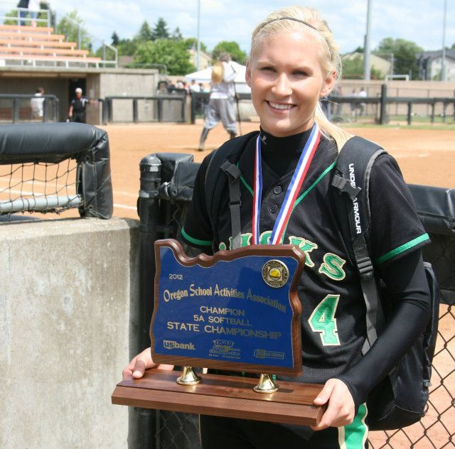
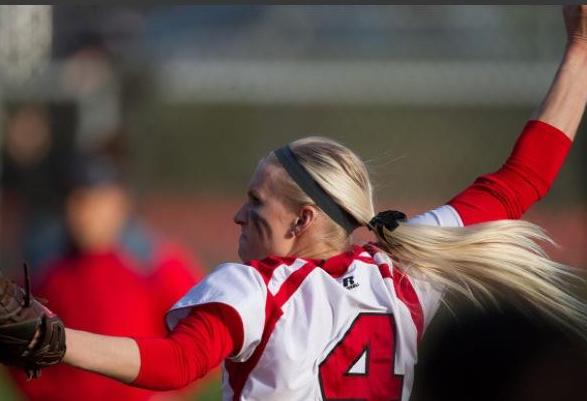
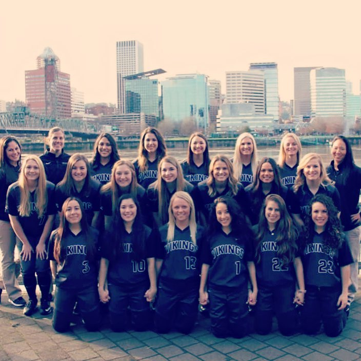
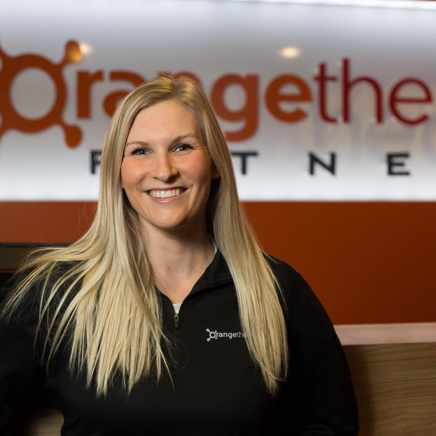
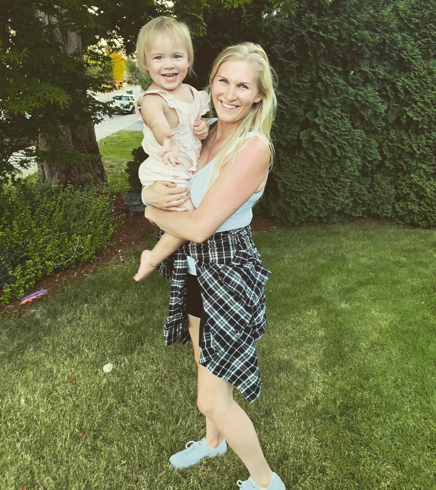

Kristen is 27 years old from Pendleton, Oregon which is a small town in Eastern Oregon. She has spent most of her life (18 years) in a small town which shaped who she is today, so I want to make sure I highlight the importance of that. She lives with me in Portland now and loves being in a city as it differs very much from how she grew up.
Kristen is 27 years old from Pendleton, Oregon which is a small town in Eastern Oregon. She has spent most of her life (18 years) in a small town which shaped who she is today, so I want to make sure I highlight the importance of that. She lives with me in Portland now and loves being in a city as it differs very much from how she grew up.
Kristen is 27 years old from Pendleton, Oregon which is a small town in Eastern Oregon. She has spent most of her life (18 years) in a small town which shaped who she is today, so I want to make sure I highlight the importance of that. She lives with me in Portland now and loves being in a city as it differs very much from how she grew up.
High School & Sports

Kristen holding the Oregon High School 5A State Championship trophy.
In high school, extracurricular activities were a big part of Kristen’s life, she was involved in many things from sports and dance to social gatherings and work. She was a server in a high-end restaurant at the young age of 16 years old and she feels that experience has a large influence in her success today. Softball also became a large part of her life in high school and she was very successful with it as well. She was very good pitcher who won state championships her junior and senior year and was Oregon player of the year in 2012, her senior year.
College & Softball
Kristen attended college at Mount Hood CC in Gresham, Oregon. Softball became even more important to her at this point in her life because it was now her main activity outside of school. Her Sophomore year, she led her team to the league title in the NWAC and was named player of the year. She finished the majority of her general studies at Mount Hood CC and transferred to Portland State University on a full ride athletic scholarship.
At this point in her sporting career, Softball became less important to her due to her relationship with the coach of the team and the fact that she was going to be graduating and starting a career in something that was possibly completely unrelated. Although, she still found some success, her highest points in the sport came before she attended PSU.

Kristen throwing a pitch for Mount Hood Community College.

Kristen and her PSU teammates in Portland, OR.
Career
Kristen got her first job post-college as a manager at LA Fitness in Portland where she would eventually meet me! LA Fitness helped to further her skillset in communications by teaching her sales techniques and getting her out of her comfort zone. With that, she was able to eventually move into her career now.
In late 2017, Kristen started a job at Orangetheory Fitness, where she currently works today, as a sales associate. Kristen has climbed the ladder at her company in the short 2 and a half years of employment. She became the assistant manager of a studio gym in early 2018, manager in late 2018 and now regional manager of 6 studios starting in late 2019 to the present day.

Kristen inside of an Orangetheory Fitness studio.
Motherhood & Present Day

Kristen and Willow
On June 16, 2018 – Kristen became a mother to our beautiful child, Willow Watson. She now balances her life, hectic work schedule and partnership all while being a caring, responsible mother, which she describes as “the biggest challenge of all.”
Miscellaneous
Kristen loves to adventure. She will often spend free time outdoors - camping, water activities, hiking or travelling.